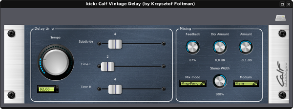

LV2 plugins for mixing: My favorite basic plugins (by zthmusic)
This article was originally published by Gabbe Nordeborn on his music projects website zthmusic.com on December 23, 2013.
The goal of this series of posts
The goal of this “my favorite plugins for mixing”-posts is pretty simple. I want to provide a list of a few plugins, that will give you a great base for mixing your music, completely for free. Therefore, the focus lies on free and open source plugins, provided in the most common plugin formats available.
These are all plugins I regularly use, or have regularly used, and feel I can personally recommend. With that said, that doesn’t necessarily mean they’re the absolute best ones out there. But, it’s a start for anyone who just wants to find a good, versatile set of plugins.
LV2 – what is it?
So, what is LV2? I will keep my brief explanation of LV2 aimed at the average user:
LV2 is the successor of LADSPA (where LADSPA is an older plugin format for Linux audio), and actually stands for Linux Audio Developer’s Simple Plugin API Version 2 (LADSPA V2). For users, who don’t understand what’s going on under the hood, the most obvious difference between LADSPA plugins and LV2 plugins, is that LV2 plugins can both have their own, custom graphical interfaces (and therefore doesn’t need to look as generic as the LADSPA plugins do), and that LV2 plugins can be instruments, which LADSPA plugins cannot.
There are probably tons of more differences, but these are the most obvious ones to me, and likely also for most of the users.
LADSPA, LV2, VST, DSSI… so… many…names… what should I use?
I’m going to answer this question from my own perspective, which I guess is the perspective of a user. You should use what the host you’re using supports, and what the plugin you want to use comes in. Sounds pretty stupid, Captain Obvious. Well, let me explain.
Host here refers to the application you want to load your plugins in. These can differ a little. For example, Ardour can handle LADSPA, LV2, and VST, but not DSSI. MusE handles LADSPA, VST, and DSSI, but not LV2 (update - MusE now supports LV2). Qtractor on the other hand, can handle them all.
What I mean with the second statement, what the plugin you want to use comes in, is shortly: Outside of the obvious differences I’ll be talking about a bit lower, I have not noticed any difference what so ever between these different architectures for myself. I’m sure there are tons of reasons to use either or, but as an end user, I have not noticed anything different.
Now, there are political differences between a few of them. I’m not going to discuss that here though, but you should know that VST for example isn’t a free format, and that’d be the only format I’d say “avoid if possible” to. But for me, the politics isn’t a deal breaker when it comes to usage, if there are no alternatives.
So, just use whatever the plugin you want to use comes in.
LV2 plugins in this post
In this post, I will try and go through one plugin each, of the most commonly used types of processing plugins. The point is to provide just a few plugins, that will give you a good fundamental for mixing your music. These will include:
- An equalizer
- A compressor
- A delay
- A reverb
These will form a great, versatile, basic plugin kit for mixing for you.
Now, that’s enough blabbering without getting to the point for one post. Let’s dive into the actual plugins!
Equalizer
The equalizer lets you sculpt your sound, by adding or removing gain at different frequencies. The equalizer is commonly used for a number of different things, like making instruments fit together, by emphasizing them on different frequencies. For example, if you’d want to make your vocals stand out more, you find where your vocals has their most prominent frequencies, and then de-emphasize those frequencies on the other instruments competing for the same frequency room. Anyway, I’m digressing.
LV2 equalizer of choice: FIL Parametric Equalizer, LV2 port (by Nedko)
The LV2 parametric equalizer’s GUI. 4 bands and a nice plot of the frequency response curve.
…aka “Fons’ Parametric Equalizer“. This one is just great. It’s everything you reasonably need from a parametric equalizer. It also comes in both mono and stereo versions. Fons doesn’t provide an LV2 of this plugin himself, but Nedko Arnaudov ported it to LV2, which makes it the ideal LV2 equalizer.
You can find the original plugin (together with lots of other great Linux audio plugins and software) in LADSPA and standalone formats, at Fons’ own website. You can find the LV2 version, which is what I’m recommending here, through various sources. If you have KXStudio, you can install it via:
sudo apt-get install lv2fil
…although I’m sure it’s available in other distributions as well. You might just need to dig around a little in the package managers.
Edit: Since this article was originally published, there is a new graphical EQ also based on Fons Adriensen's Parametric Equalizer. It is called 4 band parametric EQ and was created by Robin Gareus. It has some additional features in comparison to Nedko's version which might be of interest to some people, such as high and low pass shelves, high and low pass filters and a built in frequency spectrum analyzer.
Compressor
The compressor also lets you sculpt the sound, but instead of manipulating the frequencies directly, it manipulates the dynamics of the sound. It’s commonly used for evening out the levels of a sound, or to put emphasis on certain parts of a sound. For example, you could use a compressor on your vocals to even out its levels, making it more audible in your song, through a more consistent and higher volume.
LV2 compressor of choice: Invada Compressor

The Invada Compressor LV2 in action. It exposes some nice parameters, like the compressor curve, that makes the mixing easier.
Invada has a number of great plugins that you’ll find in the same plugin package as this compressor. Anyway, this compressor both sounds and feels good, and has a good look. It also shows you important visual elements, like the compressor curve, which can be a great aid when mixing. The compressor also comes in both a mono and stereo version.
The Invada plugin pack most likely is available through your distributions package manager. Search for “invada” and you will likely find it. If you have KXStudio, just do:
sudo apt-get install invada-studio-plugins-lv2
Delay
Echo’s, delay’s… I’m sure there’s more names. These plugins all produce an echo effect, which can be usable in a lot of different ways. I have personally always been very fond of delay’s, which I’m sure is very noticeable in my music. I usually use it both as an effect in itself, and as a form of glue in my mix, where I feed most instruments into the same delay, to make a small, barely noticeable delay “tail”, which helps glue the sound together. Again, I’m digressing…
LV2 delay of choice: Calf Vintage Delay

The Calf Vintage Delay LV2 plugin. This has been with me since forever, and I use it in virtually every mix.
Ahh! Few plugins have been with me from the very start, but the Vintage Delay from Calf is one of those. It was love at first sight, and I’ve never even bothered to give any other delay or echo plugin a proper go. Calf Vintage Delay just has everything I need; not more, not less.
You can find the Calf Vintage Delay LV2 in the Calf plugin package, which most distributions related to audio provide. Just search your package manager. If you have KXStudio, you run:
sudo apt-get install calf-plugins
Reverb
The reverb is what adds sparkle to your mix. Now, there’s a number of different types of reverbs, like halls, plates, and what not. What I will be advocating here is a solid and versatile reverb, that I think works for most occasions. It also sounds really great.
LV2 reverb of choice: Roomy
The Roomy LV2 reverb. Simple yet efficient controls, and a great sound.
From OpenAV Productions (part of the ArtyFX plugin suite) comes a very straight forward reverb, that sounds great, and offers simple and few controls. Working with reverb is almost a science itself – like previously mentioned, there are tons of different types of reverbs, where some gives a lot of control of the sound, and others a little. Roomy has merely three controls for the reverb, which I believe to be just enough to not get totally lost, and will likely be all you need up until the point that you actually know what kind of reverb sound you like and are looking for.
To install Roomy, look on the OpenAV Productions website. If you have KXStudio, you can simply use:
sudo apt-get install artyfx
Wrapping up
I hope you enjoy and find uses for these plugins. It will get you a basic but very very powerful kit of plugins for mixing. All of the plugins are also free and open source.
What are your favorite LV2 plugins? Please let us know what you think in the comments.